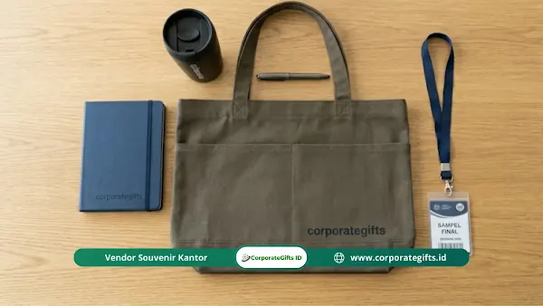

Corporate Gifts ID - Vendor goodie bag seminar instansi terpercaya adalah mitra pengadaan yang memiliki legalitas usaha lengkap, rekam jejak penyelesaian proyek instansi pemerintah dan BUMN, kapasitas produksi yang terverifikasi, serta kesediaan menyediakan sampel fisik (mockup) sebelum produksi massal dimulai. Empat parameter ini menjadi standar baku bagi panitia dalam menentukan penyedia souvenir seminar yang akuntabel.
Memilih mitra pengadaan untuk kegiatan kedinasan, kementerian, badan pemerintah, maupun universitas negeri memiliki dinamika yang sangat berbeda dari pembelian ritel biasa. Panitia pengadaan mengemban tanggung jawab ganda: memastikan kualitas paket seminar kit memenuhi ekspektasi audiens VIP, sekaligus memastikan seluruh dokumen administrasi dan perpajakan lolos audit Laporan Pertanggungjawaban (LPJ).
Poin Kunci Seleksi Vendor Seminar Instansi:
- Legalitas Usaha Terverifikasi: Memiliki Nomor Induk Berusaha (NIB), NPWP aktif, serta rekening bank resmi atas nama perusahaan.
- Kemudahan Administrasi Perpajakan: Vendor siap menerbitkan Faktur Pajak elektronik (e-Faktur), Surat Jalan, kuitansi resmi bertanda tangan, dan nota bermeterai.
- Kapasitas Mesin dan SDM Sendiri: Memiliki lini produksi konveksi dan percetakan sendiri untuk menjamin ketepatan jadwal (lead time).
- Mekanisme Proofing & Sampel Fisik: Memberikan jaminan sampel persetujuan guna mencegah kesalahan fatal warna logo atau reject material.
Mengapa Pemilihan Vendor Goodie Bag Instansi Sangat Krusial?
Dalam ekosistem pengadaan barang dan jasa instansi, vendor bukan sekadar penyuplai produk, melainkan mitra strategis yang menentukan kelancaran acara dan integritas panitia.
Berdasarkan laporan pengawasan pengadaan barang dan jasa publik, kendala pada pengadaan souvenir atau perlengkapan acara sering kali dipicu oleh ketiadaan verifikasi awal terhadap kapasitas riil vendor dan lemahnya kesepakatan tertulis.
Kesalahan dalam memilih vendor berisiko menimbulkan komplikasi serius:
- Keterlambatan Hari H: Paket goodie bag belum tiba saat registrasi peserta dimulai, mencoreng citra kredibilitas institusi.
- Penurunan Mutu Spesifikasi: Bahan tas lebih tipis dari spesifikasi RAB atau tinta sablon yang mudah mengelupas.
- Penolakan Dokumen Keuangan: Dokumen tagihan tidak lengkap sehingga dana anggaran tertahan dan menyulitkan proses pencairan kas panitia.
4 Kriteria Utama Vendor Goodie Bag Instansi yang Layak
Gunakan 4 kriteria verifikasi berikut sebelum menerbitkan Surat Perintah Kerja (SPK) kepada vendor:
1. Legalitas Badan Usaha yang Lengkap dan Aktif
Pastikan vendor berstatus badan hukum resmi (CV atau PT) dengan dokumen pendukung:
- NIB (Nomor Induk Berusaha): Membuktikan legalitas izin operasional perdagangan dan industri konveksi.
- NPWP Perusahaan Aktif: Diperlukan untuk penerbitan faktur pajak pertambahan nilai (PPN) sesuai ketentuan perundang-undangan.
- Rekening Bank Perusahaan: Menghindari pembayaran ke rekening pribadi perorangan demi kepatuhan tata kelola keuangan yang transparan.

Koleksi isi goodie bag seminar instansi: tote bag kanvas ramah lingkungan, blocknote hardcover deboss, tumbler grafir laser, dan pulpen metal.
2. Portofolio Rekam Jejak Pengadaan Instansi Teruji
Vendor yang berpengalaman dengan klien kementerian, BUMN, dan lembaga kedinasan telah memahami alur standar operasional (SOP) birokrasi, format surat jalan, serta standar ketat pengemasan antarkota.
3. Kapasitas Produksi yang Transparan dan Terukur
Tanyakan secara detail mengenai kapasitas produksi harian unit workshop. Vendor yang memiliki mesin jahit, mesin cutting otomatis, dan alat cetak UV sendiri mampu memberikan kepastian jadwal yang jauh lebih andal dibandingkan perantara (makelar) lepas.
4. Ketersediaan Sampel Fisik (Pre-Production Sample)
Vendor profesional tidak akan ragu mengirimkan sampel fisik sebelum pencetakan massal. Sampel memungkinkan panitia menguji daya muat tas, kerapian jahitan tali, dan akurasi warna logo korporat.
Tahapan Proses Seleksi Vendor yang Transparan dan Terstruktur
Jalankan proses seleksi melalui 4 tahapan sistematis berikut:
- Penyusunan Kerangka Acuan Kerja (KAK) & Spesifikasi Detail: Tuliskan secara rinci jenis material (misalnya kanvas katun 12 oz atau spunbond 100 gsm), dimensi tas, dimensi logo, dan daftar item pendukung seperti notebook dan pulpen.
- Permintaan Penawaran Harga (RFQ) dari Minimal 3 Vendor: Mengumpulkan penawaran komparatif untuk memastikan harga yang diajukan wajar dan kompetitif terhadap pagu anggaran DIPA/RKA.
- Evaluasi Teknis dan Administrasi: Bandingkan kelengkapan legalitas, portofolio riil, dan ketepatan waktu respon Customer Service masing-masing vendor.
- Persetujuan Sampel Akhir & Penandatanganan Kontrak/SPK: Setelah sampel fisik disetujui panitia, terbitkan surat pesanan resmi yang mengikat hak, kewajiban, dan sanksi keterlambatan.
Tabel Evaluasi Komparasi Vendor Goodie Bag Seminar Instansi
Gunakan matriks checklist evaluasi berikut saat menilai kelayakan mitra penyedia seminar kit:
| Parameter Evaluasi | Vendor Profesional Berbadan Hukum | Perantara / Vendor Lepas Tidak Resmi | Tingkat Risiko bagi Panitia |
|---|---|---|---|
| Status Legalitas & Pajak | PT/CV Resmi, Memiliki NIB, Menerbitkan e-Faktur PPN | Perorangan, Tanpa Izin Usaha, Kuitansi Manual | Tinggi (Risiko Temuan Audit Keuangan) |
| Fasilitas Workshop | Konveksi & Mesin Cetak Internal Terverifikasi | Mengandalkan Subkontraktor Pihak Ketiga | Tinggi (Rawan Keterlambatan Lead Time) |
| Layanan Sampel Fisik | Tersedia Proofing Fisik & Mockup Digital Cepat | Hanya Foto Katalog Digital Tanpa Sampel Riil | Sedang (Potensi Reject Kualitas Massal) |
| Sistem Pembayaran B2B | Mendukung Invoice Tempo B2B / Termin Resmi | Wajib Pelunasan di Awal ke Rekening Pribadi | Tinggi (Risiko Keamanan Kas Instansi) |
| Jaminan Garansi Produk | Garansi Ganti Unit Baru Jika Terjadi Reject Cetak | Tanpa Komitmen Garansi Purnajual Tertulis | Sedang (Kerugian Finansial Barang Cacat) |
Risiko Fatal Akibat Salah Memilih Mitra Vendor
Mengabaikan tahapan seleksi demi mengejar penawaran termurah sering berujung pada konsekuensi yang merugikan:
- Kerugian Reputasi Lembaga: Tamu undangan kehormatan menerima goodie bag dengan jahitan lepas atau resleting macet.
- Pemotongan Honorarium Panitia: Pajak yang tidak terbayar atau faktur fiktif dari penyedia lepas dapat membebankan denda pada panitia pelaksana.
- Kepanikan Menjelang Acara: Ketidakpastian pengiriman memaksa panitia mencari souvenir pengganti secara terburu-buru dengan biaya jauh lebih tinggi.
Pertanyaan Seputar Vendor Goodie Bag Seminar Instansi (FAQ)
Kesimpulan dan Konsultasi Goodie Bag Instansi Bersama Corporate Gifts ID
Memilih vendor goodie bag seminar instansi yang tepat adalah langkah mitigasi risiko terbaik dalam menjamin suksesnya acara kedinasan dan kebersihan pertanggungjawaban anggaran. Prioritaskan mitra yang memiliki legalitas jelas, fasilitas produksi mandiri, dan transparansi administrasi.
Corporate Gifts ID siap menjadi mitra pengadaan seminar kit dan goodie bag instansi terpercaya Anda. Jelajahi aneka paket pada katalog produk resmi kami atau hubungi tim konsultan untuk pengajuan penawaran harga resmi (RAB) dan sampel fisik.